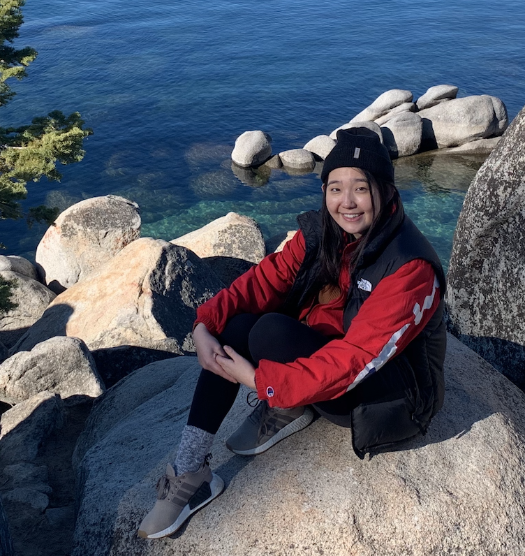
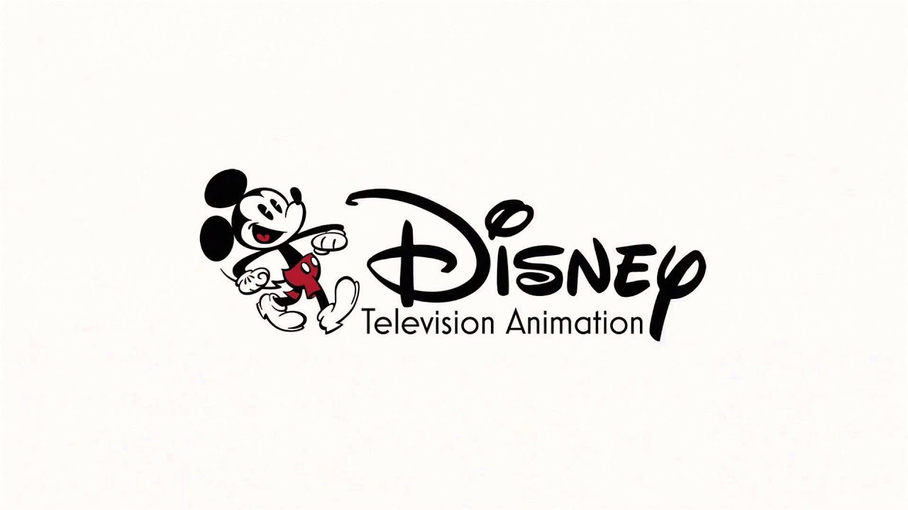

Portfolio || Curie Hong
Curie Hong
Hello, welcome!
My name is Curie, and I am a Senior at University of Illinois Urbana Champaign
pursuing a B.S. in Computer Science with emphasis in Media.
Recent Experience
DTVA Digital Production Intern (Fall 2020)

Main Project: I worked on finishing up and refining a Maya plugin research project that a previous TD worked on.
DTVA Digital Production Intern (Summer 2019)
Main Project: I worked with Python, tsch, and Bash to write code supporting workflow for Linux OS.
Warner Bros. Emerging Tech Intern

I worked with Android API, UX/UI, Unity, and various biometric sensors towards an innovative application to narrative storytelling.
Recent Projects
Click on the images to view more info.